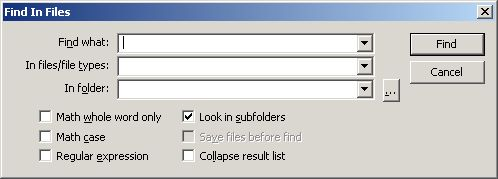

Search -> Find In Files...
Previous
Top
Find the specified character or string in files or files type in a particular folder. Use the proposed options to search in subfolders, match case, find regular expressions...
